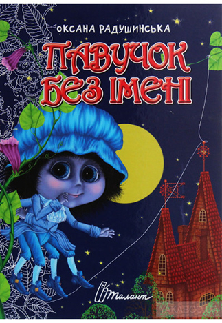

Книги для дітей (поетичні та прозові)
"-З особливим трепетом пишу для діток. Коли роблю це, то намагаюся залишати себе, дорослу, для технічного боку віршика, пісні, казки чи роману і щонайчастіше звертатися до свого дитячого «я» — аби не злукавити, не надумати чогось штучного..."
Письменниця пропонує з допомогою віршованої абетки вивчити надзвичайно потрібні правила вуличного руху, запам'ятати дорожні знаки та перевірити свої знання. Книга містить привабливі ілюстрації, дорожні знаки, які допоможуть дошколярику засвоїти прочитане.
Ця книга стане гарним порадником та другом для дітей, котрі тільки починають пізнавати таємниці букв і словосполучень. Кожна сторінка – це маленька казка, де гармонійно поєднані зміст тексту та кольорові малюнки. Це цілий світ з кумедними тваринами і птахами, добрими людьми і зрозумілими явищами природи.
Читання цієї книги не лише розважить малечу, а й навчить мислити, запам'ятовувати. Поруч із кожною історією діткам пропонується запам'ятати назви тварин, квітів, підводних мешканців, що на малюнках, або про яких йдеться у розповіді.

Ці віршики – лагідні, мелодійні – для найменшеньких, тих дівчаток і хлоп'яток, хто лише починає пізнавати цей неповторний і такий цікавий навколишній світ. Гарні кольорові малюнки дохідливо розкривають зміст і суть кожного віршика.
Це перша збірочка поезії письменниці, адресована дітям молодшого шкільного віку. Вона містить веселі, повчальні, легкі та доступні віршики, які легко запам'ятовуються. А ще з їх допомогою діти можуть швидко вивчити абетку та краще пізнати навколишній світ.
Багатий на свята український календар. Із державних, церковних, народних, родинних свят складається неповторний вінок нашої культури і приналежність до свого народу. Цікаво та дохідливо письменниця розповідає, чому саме так, а не інакше ми відзначаємо Різдво, Трійцю, Миколая, що таке веснянки, зажинки.
Два симпатичних равлики - Юрасик та Марічка вирушають на пошуки найкрасивішої, найвищої веселки. І то не знічев’я, а тому, що барвиста райдуга може здійснити найпотаємнішу Мрію! Чи вийде в маленьких равликів вилізти на вершечок веселки, а може, вони злякаються перешкод?.. Про це ти дізнаєшся з чудової читанки.

в закутку старого будинку оселилися родина Павуків: мама Павучиха, тато Павук та купа їхніх діточок. Але найменший павучок навіть ще імені немає, але ж він бажає отримати його понад все в світі. Він не схожий на своїх братів та сестер, адже не хоче годити злій тітці Павучисі та ловити гарного Метелика...
Бажаєте, щоб Ваш малюк не лише вивчив назви іграшкових предметів, а й зрозумів, наскільки важливо дотримуватися порядку та грамотно розрізняти час для гри і час для виконання інших важливих справ, які є невід'ємною частиною розпорядку дня?
Книжка-картонка для найменших читачів. На кожній сторінці у героя на місці очей - прорізи, на останній сторінці - пластикові оченята з рухомими зіницями. Дитина перегортає сторінки, і у кожного героя "з'являються" очі.
Чудова книжечка-картонка для найменших читачів. Для читання дорослими дітям.
Книжка-картонка для найменших читачів. На кожній сторінці у героя на місці очей - прорізи, на останній сторінці - пластикові оченята з рухомими зіницями. Дитина перегортає сторінки, і у кожного героя "з'являються" очі.
Поетичні збірки
"— Вірші для мене — потреба: як дихати, як говорити. Ще до того, як навчилася читати й писати, я щось римувала (переважно пісеньки) і одразу ж забувала своє «творіння». У підлітковому віці почала ті рядки записувати. Згодом щось надрукували в місцевій газеті, потім — в обласній... Я ніколи не беруся писати у поганому настрої, ображеною чи розчарованою. Лише коли емоції пригаснуть і трансформуються у життєві висновки, можна дозволити собі писати.."
“З чистих подільських джерел, а ще з коріння древнього Старокостянтинова беру я свої слова і рядки, які сплітаю у вірші”. “На крилах мрій” – перший збірник поезій. Про що найбільше говориться у цих творах? Про світле, прекрасне, як вранішнє сонечко, як спів лісу, про матінку-природу, про все, що будить в душі ніжні струни смутку та радості.
Чергова книжечка поезій Оксани Радушинської “Світанкові сни” – то добірка ліричних, чистих, світлих віршів. Це щирі роздуми про сутність життя, це сподівання на те, що всі негаразди залишаться десь там, а сьогодні все буде інакше – світліше і радісніше.

У цих творах домінують чистота кохання, чесність, мужність, порядність, краса людського буття. У них живе і дихає поезія, як живе і хвилює красою скромний підсніжник чи несподіваний дощ, схід сонця і фантастична яблунева заметіль.
У збірці поезій та етюдів переплелись особисте світовідчуття та образи мальовничої природи, створюючи при цьому неповторну, феноменальну реальність мистецького всесилля, в якій стираються межі між внутрішнім світом митця і світом зовнішнім.
Ці образні та багаті на принади рідної мови вірші, вражають ліричністю, мудрістю. У вишуканих строфах переважає вміння сказати про відомі речі свіжо, по-своєму. Їх хочеться читати і перечитувати, а то й наспівувати.
Ці вірші – то пошук істини і мудрості, це радість і біль. Водночас, вони наповнені живими кольорами світу, запахами, звуками, вишуканими словами, мають аромат справжньої поезії.
Проза
Творчість письменниці є світлою, прекрасною, позбавленою турбот сьогодення. Адже вона вірить, що краса врятує світ...

"Любов довготерпить, любов милосердствує, не заздрить, любов не величається, не надимається, не поводиться нечемно, не шукає тільки свого, не рветься до гніву, не думає лихого, не радіє з неправди, але тішиться правдою, усе зносить, вірить у все, сподівається всього, усе терпить! Ніколи любов не перестає!"
Чи дозволено дітям робити усе-усе, що заманеться, незважаючи на закони і правила, якими користуються дорослі? Які вчинки дітей можуть спричинити халепу і що потрібно робити, аби уникнути неприємностей вдома, на вулиці, у школі чи у відносинах зі знайомими і незнайомими людьми?

Збірку казок «День полив’яної казки», написану в українському народному стилі, письменниця і поетеса Оксана Радушинська пропонує почитати дітям, аби ще краще усвідомити свою неповторність і свою ментальність, поміж всіма народами та націями на планеті Земля.
Чи багато дітей можуть похвалитися тим, що ніколи-ніколи в житті не робили ніяких бешкетів? Близнюки Соломійка та Нестор однозначно не належать до когорти чемних дітей, що вони не втнуть — усе не так! А може, все саме ТАК?
Автор описує історію дівчинки Ярини, що народилася здоровою і мала щасливе дитинство. Але внаслідок ДТП дівчинка раптом набула статусу сироти і людини з інвалідністю, що використовує крісло колісне...
«Амулет волхва…» зростав разом із авторкою. Майже дитяча казочка про звитяги та кохання стала напрочуд оригінальною історією про дорослішання, про те, що надія є завжди, навіть, якщо проти тебе, здається, виступило усе зло цього світу.
Лірична героїня цих етюдів, оповідань намагається пізнати себе через призму історії та майбуття, захоплюється красою та неповторністю світу, оспівує його.